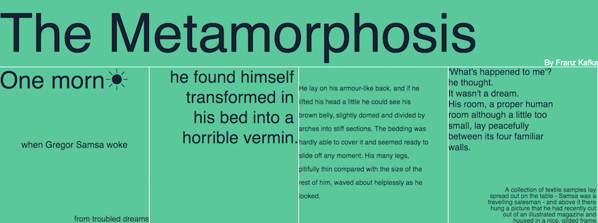

Typography
Canvas element has only basic supports for text, making it difficult to create and experiment with typographic layouts. Pts provides additional functions to help you position text contents on canvas. In this guide, we will take a look at these features.

You can view this typographic layout demo on the demo page.
Text Box
The textBox function in CanvasForm lets you control how a single-line text should be displayed inside a box.
First, specify a rectangular area (specified by a Group) and a text string. Optionally, you can also specify where the text should be placed vertically, as well as the characters used for abbreviation when the text truncates. For example:
form.textBox( area, "hello world", "bottom", "..." );
Below is a demo of truncated text at placed at top, middle, and bottom of a a rectangle. Move your pointer over to change the size of the area.

Aligment
Canvas API already provides textBaseline and textAlign for text alignments. Pts makes these more convenient via alignText function. Use it with textBox to position your text within a rectangular area.
Combining alignText with textBox gives you lots of options to organize your typographic layout.
Paragraph
For multi-line text, you may use the paragraphBox function. It works similar to textBox with extra options to specify line-height and overflow. For example:
form.paragraphBox( area, "hello world", 1.5, "middle" );
A paragraph placed in the middle of the text box. Move your pointer to change the box size.
The text overflow will be cropped by default. If you prefer to let them overflow, set the crop parameter to false. If your text contains multiple paragraphs, you may separate them with line breaks (\n). For example:
form.paragraphBox( area, "hello \n\n world", 1.5, "middle", false );
The following demo shows 2 paragraphs with different line-height and alignments and no crop.
You may combine alignText with paragraphBox too.
For long paragraphs, you may consider using fontWidthEstimate. This will use a simple heuristic to estimate text width, which is less accurate but may be faster.
Considerations
Hope these functions will give you more control over text on canvas, especially when you want to play with typographic experiments. However, putting text on canvas may not be a good approach in many cases. For example, it has poor accessibility (cannot be read for screen reader) and cannot be indexed by search engines.
And we will be adding similar functions to support for SVG text too. Stay tuned!
Cheatsheet
The text layout functions are currently implemented in CanvasForm.
// put text content in an area defined by a Group
form.textBox( area, content );
// put in bottom, use "..." when truncated
form.textBox( area, content, "bottom", "..." );
// align text before putting into textBox
form.alignText("left", "top").textBox( area, content );
// put multi-line text in a box with line-height of 1.5
form.paragraphBox( area, content, 1.5 );
// multi-line text center aligned, place in middle and allow overflow
form.alignText("center").paragraphBox( area, content, 1.5, "middle", false );
// Use heuristics to estimate font width
form.fontWidthEstimate(true).paragraphBox( area, content );